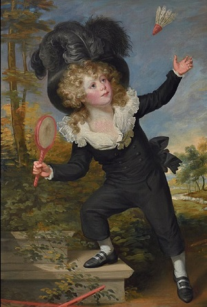

History of Badminton
The exact origin of the game of badminton remains obscure. The early sport related to badminton date back at least 2,000 years to the game of battledore and shuttlecock practiced in China, and Siam. The object of the game is to keep in the air a shuttlecock using a battledore (racket).
In the 1860s, British army officers serving in Poona, India adopted the game of battledore and shuttlecock, and probably brought it back to England. In 1873, the game has been played for the first time in the Duke of Beaufort’s country house, called Badminton House from which the game derives its name. The Badminton Association of England, created in 1893, set the rules of the game which, codified the rules that still govern competitive play.
The International Badminton Federation, now known as the Badminton World Federation (BWF), was formed in 1934. Since the creation, more than 150 countries have joined this federation. The Olympic Committee therefore decided to include this discipline in the Barcelona Olympic Games in 1992.